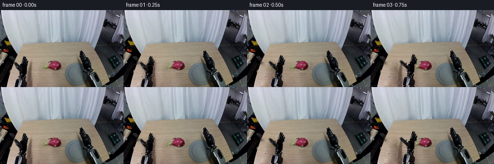
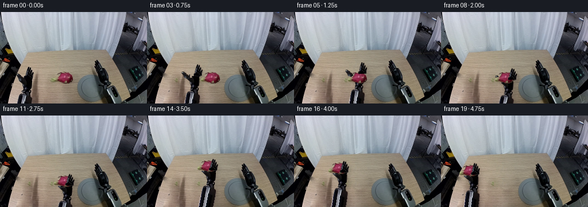

CODING AGENTS AS PIXEL WORLD MODELS
traex/GPT-6.1-Sol · common50_0039
点击播放 · 原生 RGB 像素
逐轮保存的候选
回放视频、检查图与代码变化。
每份候选均可单独播放。实际图片检查记录在下方工具轨迹中。
候选 01播放与检查图
点击播放 · 原生 RGB 像素

展开代码变化
--- 上一保存版本
+++ 本次保存版本
@@ -0,0 +1,183 @@
+"""Rigid, image-textured tabletop pickup; all geometry derives from frame 00."""
+from pathlib import Path
+import numpy as np
+from PIL import Image, ImageDraw, ImageFilter
+import artifact_io
+
+ROOT=Path(__file__).resolve().parent
+W,H=256,160
+
+def polygon(points, size=(W,H)):
+ a=Image.new('L',size);ImageDraw.Draw(a).polygon(points,fill=255)
+ return np.asarray(a).astype(float)/255
+
+def dilate(a,n=3):
+ return np.asarray(Image.fromarray(np.uint8(np.clip(a,0,1)*255)).filter(ImageFilter.MaxFilter(n))).astype(float)/255
+
+def blur(a,r):
+ return np.asarray(Image.fromarray(np.uint8(np.clip(a,0,1)*255)).filter(ImageFilter.GaussianBlur(r))).astype(float)/255
+
+def harmonic_patch(im, mask, source, steps=450):
+ # Preserve real table grain, solve only for the low-frequency colour match.
+ known=mask<0.01
+ delta=im.astype(float)-source.astype(float)
+ field=delta.copy();field[~known]=0
+ for _ in range(steps):
+ nxt=(np.roll(field,1,0)+np.roll(field,-1,0)+np.roll(field,1,1)+np.roll(field,-1,1))*.25
+ field[~known]=nxt[~known]
+ candidate=np.clip(source+field,0,255)
+ return im*(1-mask[:,:,None])+candidate*mask[:,:,None]
+
+def rgba(rgb,a):
+ return Image.fromarray(np.dstack([np.uint8(np.clip(rgb,0,255)),np.uint8(np.clip(a,0,1)*255)]),'RGBA')
+
+def transform(sprite, pivot, dst, angle=0):
+ # One Euclidean transformation: texture and dimensions never deform.
+ theta=np.deg2rad(angle);c,s=np.cos(theta),np.sin(theta)
+ px,py=pivot;dx,dy=dst
+ inv=(c,s,px-c*dx-s*dy,-s,c,py+s*dx-c*dy)
+ return sprite.transform((W,H),Image.Transform.AFFINE,inv,Image.Resampling.BICUBIC)
+
+def smooth(t):
+ t=np.clip(t,0,1);return t*t*(3-2*t)
+
+def mix(a,b,t):return np.array(a)*(1-smooth(t))+np.array(b)*smooth(t)
+
+def main():
+ raw=np.asarray(Image.open(ROOT/'first_frame.png').convert('RGB'))
+ im=raw.astype(float)
+ # The black/grey articulated left tool, separate from the fixed dark frame.
+ bounds=polygon([(48,95),(51,95),(52,97),(54,97),(54,101),(56,101),
+ (56,104),(59,105),(59,109),(57,113),(57,125),(56,132),(53,135),
+ (55,137),(55,143),(54,147),(57,151),(57,159),(29,159),(30,151),
+ (31,145),(34,142),(39,141),(40,138),(39,135),(39,128),(38,125),
+ (35,121),(32,118),(30,114),(28,110),(29,108),(32,108),(35,110),
+ (38,113),(41,114),(43,112),(44,109),(44,106),(46,102),(47,98)])
+ lum=im.mean(2)
+ # Numerically distinguish neutral machined metal from warm wood.
+ neutrality=np.clip((25-(im[:,:,0]-im[:,:,2]))/13,0,1)
+ arm_a=bounds*np.maximum(neutrality,(lum<73).astype(float))
+ # Keep the recognizable screw, collar and bright metal details intact.
+ arm_a=np.where(arm_a>.96,1,arm_a)
+
+ fruit_outline=polygon([(106,104),(110,105),(116,105),(120,106),(123,108),
+ (125,110),(127,112),(128,115),(127,118),(126,120),(123,122),
+ (121,123),(119,124),(111,124),(108,122),(104,123),(101,122),
+ (98,122),(94,120),(94,117),(96,114),(99,114),(101,112),
+ (103,111),(103,109),(101,108),(103,106),(105,107)])
+ fruit_a=fruit_outline
+ # Restore the tabletop where the fruit and its contact shadow stood.
+ yy,xx=np.mgrid[:H,:W]
+ old_shadow=((xx-113)/18)**2+((yy-123)/5.2)**2<1
+ remove_f=np.maximum(dilate(fruit_a,5),old_shadow.astype(float))
+ remove_f=np.maximum(remove_f,blur(remove_f,1.1))
+ source=im[np.clip(yy-27,0,H-1),xx].copy()
+ plate=harmonic_patch(im,remove_f,source,550)
+ # Recover the narrow background hidden behind the tool, using same-row wood.
+ remove_a=dilate(arm_a,3)
+ remove_a=np.maximum(arm_a,blur(remove_a,.65))
+ source=plate[yy,np.clip(xx+39,0,W-1)].copy()
+ plate=harmonic_patch(plate,remove_a,source,550)
+ plate=np.uint8(np.clip(plate,0,255))
+ Image.fromarray(plate).save(ROOT/'clean_plate.png')
+
+ # The lower rigid shaft continues out of frame. Reuse its own texture.
+ EH=245
+ arm_rgb=np.zeros((EH,W,3),float);arm_rgb[:H]=im
+ arm_alpha=np.zeros((EH,W),float);arm_alpha[:H]=arm_a
+ for y in range(H,EH):
+ sy=148+(y-H)%12
+ shift=int(np.floor(-.12*(y-H)))
+ for x in range(28,59):
+ nx=x+shift
+ if nx>=0:
+ arm_rgb[y,nx]=im[sy,x]
+ # Preserve the rigid narrow cable/shaft geometry below the crop.
+ if (31<=x<=37) or (43<=x<=55):
+ arm_alpha[y,nx]=1
+ ry,rx=np.mgrid[:EH,:W]
+ rjaw=arm_alpha*((ry<116)&(rx>=43))
+ ljaw=arm_alpha*((ry<119)&(rx<43))
+ body=arm_alpha-rjaw-ljaw
+ back=rgba(arm_rgb,body)
+ right=rgba(arm_rgb,rjaw)
+ left=rgba(arm_rgb,ljaw)
+ fr=rgba(im,fruit_a)
+ pivot=(47,137)
+ initial_grasp=np.array([42.,108.])
+ fruit_start=np.array([112.,114.5])
+ # Frame-index key poses with zero-velocity approach/contact/settling.
+ frames=[raw.copy()]
+ checks=[]
+ for i in range(1,20):
+ if i<=6:
+ grip=mix(initial_grasp,[112,100],i/6)
+ opening=4*smooth(i/4)
+ angle=-3*smooth(i/6)
+ elif i<=9:
+ grip=mix([112,100],fruit_start,(i-6)/3)
+ opening=4.; angle=-3*(1-smooth((i-6)/3))
+ elif i<=11:
+ grip=fruit_start.copy();opening=4-2.8*smooth((i-9)/2);angle=0
+ elif i<=14:
+ grip=mix(fruit_start,[106,88],(i-11)/3)
+ opening=1.2;angle=0
+ elif i<=18:
+ grip=mix([106,88],[50,96],(i-14)/4)
+ opening=1.2;angle=-4*smooth((i-14)/4)
+ else:
+ grip=np.array([50.,96.]);opening=1.2;angle=-4.
+ t=np.deg2rad(angle);R=np.array([[np.cos(t),-np.sin(t)],[np.sin(t),np.cos(t)]])
+ wrist=grip-R@(initial_grasp-np.array(pivot))
+ carried=i>=11
+ fc=grip.copy() if carried else fruit_start.copy()
+ fruit_angle=angle if carried else 0.
+ # Parallel finger slides maintain individually rigid jaw shapes.
+ right_pos=wrist+R@np.array([opening,0.])
+ left_pos=wrist+R@np.array([-opening,0.])
+ b=transform(back,pivot,wrist,angle)
+ r=transform(right,pivot,right_pos,angle)
+ l=transform(left,pivot,left_pos,angle)
+ f=transform(fr,fruit_start,fc,fruit_angle)
+ canvas=Image.fromarray(plate).convert('RGBA')
+ # Fixed diffuse lighting; a small shadow follows the raised tool.
+ union=np.maximum.reduce([np.asarray(b)[:,:,3],np.asarray(r)[:,:,3],np.asarray(l)[:,:,3]])/255.
+ shadow=Image.fromarray(np.uint8(union*255)).filter(ImageFilter.GaussianBlur(2.5))
+ sh=Image.new('L',(W,H));sh.paste(shadow,(5,5))
+ shadow_a=np.asarray(sh).astype(float)/255.*.10
+ table_gate=np.clip((plate[:,:,0].astype(float)-plate[:,:,2])/20,0,1)
+ shadow_a*=table_gate
+ under=np.asarray(canvas).copy()
+ under[:,:,:3]=np.uint8(under[:,:,:3].astype(float)*(1-shadow_a[:,:,None]))
+ canvas=Image.fromarray(under,'RGBA')
+ # Fruit contact shadow moves downward and softens as it is lifted.
+ lift=max(0,fruit_start[1]-fc[1]) if carried else 0
+ cx,cy=fc[0]+2,fc[1]+9+lift*.40
+ radx=14+lift*.08;rady=2.5+lift*.04
+ fs=np.exp(-(((xx-cx)/radx)**2+((yy-cy)/rady)**2)*1.7)
+ strength=.19*np.exp(-lift/28)
+ arr=np.asarray(canvas).copy();arr[:,:,:3]=np.uint8(arr[:,:,:3].astype(float)*(1-strength*fs[:,:,None]*table_gate[:,:,None]))
+ canvas=Image.fromarray(arr,'RGBA')
+ canvas.alpha_composite(b)
+ # Tiny machined slider rails are visible only while fingers are opened.
+ if opening>0.3:
+ rail=np.zeros((EH,W,4),np.uint8)
+ ri=Image.fromarray(rail,'RGBA');d=ImageDraw.Draw(ri)
+ d.line([(51,115),(54+opening,115)],fill=(24,26,29,255),width=3)
+ d.line([(36,118),(36-opening,118)],fill=(22,24,27,255),width=3)
+ canvas.alpha_composite(transform(ri,pivot,wrist,angle))
+ canvas.alpha_composite(l)
+ canvas.alpha_composite(f)
+ canvas.alpha_composite(r)
+ frames.append(np.array(canvas.convert('RGB')))
+ checks.append({'frame':i,'grip':grip.tolist(),'fruit':fc.tolist(),'opening':float(opening),'angle':float(angle)})
+ frames=np.stack(frames).astype(np.uint8)
+ assert frames.shape==(20,160,256,3)
+ assert np.array_equal(frames[0],raw)
+ np.savez_compressed(ROOT/'candidate_rgb.npz',frames=frames)
+ import json
+ (ROOT/'motion_check.json').write_text(json.dumps(checks,indent=2))
+ artifact_io.save(frames,ROOT)
+ print('Saved 20 RGB frames, 256x160; frame 00 is identical to input.')
+
+if __name__=='__main__':main()
候选 02播放与检查图
点击播放 · 原生 RGB 像素

展开代码变化
--- 上一保存版本
+++ 本次保存版本
@@ -78,7 +78,7 @@
remove_a=np.maximum(arm_a,blur(remove_a,.65))
source=plate[yy,np.clip(xx+39,0,W-1)].copy()
plate=harmonic_patch(plate,remove_a,source,550)
- plate=np.uint8(np.clip(plate,0,255))
+ plate=np.uint8(np.round(np.clip(plate,0,255)))
Image.fromarray(plate).save(ROOT/'clean_plate.png')
# The lower rigid shaft continues out of frame. Reuse its own texture.
@@ -86,15 +86,14 @@
arm_rgb=np.zeros((EH,W,3),float);arm_rgb[:H]=im
arm_alpha=np.zeros((EH,W),float);arm_alpha[:H]=arm_a
for y in range(H,EH):
- sy=148+(y-H)%12
- shift=int(np.floor(-.12*(y-H)))
+ shift=int(np.round(-.20*(y-H)))
for x in range(28,59):
nx=x+shift
if nx>=0:
- arm_rgb[y,nx]=im[sy,x]
- # Preserve the rigid narrow cable/shaft geometry below the crop.
- if (31<=x<=37) or (43<=x<=55):
- arm_alpha[y,nx]=1
+ # Extrude the actual bottom cross-section, not a repeating crop.
+ # The two rods and their specular edges stay straight and solid.
+ arm_rgb[y,nx]=im[H-1,x]*(1-.0006*(y-H))
+ arm_alpha[y,nx]=arm_a[H-1,x]
ry,rx=np.mgrid[:EH,:W]
rjaw=arm_alpha*((ry<116)&(rx>=43))
ljaw=arm_alpha*((ry<119)&(rx<43))
候选 03播放与检查图
点击播放 · 原生 RGB 像素

展开代码变化
--- 上一保存版本
+++ 本次保存版本
@@ -63,7 +63,8 @@
fruit_outline=polygon([(106,104),(110,105),(116,105),(120,106),(123,108),
(125,110),(127,112),(128,115),(127,118),(126,120),(123,122),
(121,123),(119,124),(111,124),(108,122),(104,123),(101,122),
- (98,122),(94,120),(94,117),(96,114),(99,114),(101,112),
+ (98,123),(94,123),(91,121),(90,119),(89,117),(91,116),
+ (94,115),(96,114),(99,114),(101,112),
(103,111),(103,109),(101,108),(103,106),(105,107)])
fruit_a=fruit_outline
# Restore the tabletop where the fruit and its contact shadow stood.
可观测工具轨迹
实际执行的命令与返回图片。
命令 1exit 0
/bin/bash -lc "ls -la && cat prompt.txt && printf '\\n--- RULES ---\\n' && cat GENERATION_RULES.md"
命令 2exit 0
/bin/bash -lc "cat task_spec.json && cat artifact_io.py && python - <<'PY'
from PIL import Image
import numpy as np
im=np.array(Image.open('first_frame.png'))
print(im.shape)
# Color labels ASCII at 3px scale
for y in range(0,160,3):
s=''
for x in range(0,256,3):
r,g,b=im[y:y+3,x:x+3].mean((0,1))
if max(r,g,b)<45: c='#'
elif max(r,g,b)-min(r,g,b)<18: c='.' if r>180 else ('o' if r>110 else 'x')
elif r>g*1.25 and r>b*1.08: c='R' if r>140 else 'r'
elif g>r*1.15 and g>b*1.05: c='G'
elif b>r*1.15 and b>g*1.08:c='B'
elif r>130 and g>85 and b<g*.82: c='w'
else:c=':'
s+=c
print(f'{y:3} {s}')
PY"命令 3exit 0
/bin/bash -lc "python - <<'PY'
from PIL import Image
import numpy as np
im=np.array(Image.open('first_frame.png'))
for p in [(128,80),(100,130),(125,110),(115,115),(108,117),(48,100),(51,120),(22,101),(175,86),(170,100),(174,125),(62,55),(152,20),(18,67),(155,125),(1,125)]:
x,y=p; print(p,im[y,x])
# pixel color / brightness map full size with one pixel at step2
chars='@%#*+=-:. '
for y in range(65,160,2):
line=''
for x in range(0,256,2):
rgb=im[y:y+2,x:x+2].mean((0,1));v=rgb.mean()
if rgb[0]>rgb[1]+15 and rgb[0]>rgb[2]+7: c='P' if v>70 else 'p'
elif rgb[1]>rgb[0]+8 and rgb[1]>rgb[2]: c='G'
else:c=chars[min(9,int(v/256*10))]
line+=c
print(f'{y:3} {line}')
print('Fruit crop every RGB')
for y in range(100,129,2):
print(y, ' '.join('%02x%02x%02x'%tuple(im[y,x]) for x in range(96,140,2)))
PY"命令 4exit 0
/bin/bash -lc "python - <<'PY'
import numpy as np
from PIL import Image
im=np.array(Image.open('first_frame.png'))
for box in [(12,85,62,160),(132,76,206,160)]:
x0,y0,x1,y1=box
print('BOX',box, ' each char = pixel, dark 0-30 #, 30-55 X, 55-85 +, 85-115 :, >115 space')
print(' '+''.join(str(x//10%10) for x in range(x0,x1)))
print(' '+''.join(str(x%10) for x in range(x0,x1)))
for y in range(y0,y1):
s=''
for x in range(x0,x1):
r,g,b=im[y,x]; v=(int(r)+int(g)+int(b))/3
s+= '#' if v<30 else 'X' if v<55 else '+' if v<85 else ':' if v<115 else ' '
print(f'{y:3} {s}')
PY"命令 5exit 0
/bin/bash -lc "python - <<'PY'
import numpy as np
from PIL import Image
im=np.array(Image.open('first_frame.png'))
# threshold mask constrained ROI counts, intervals
for nam,box in [('L',(28,91,62,160)),('R',(160,80,210,160)),('F',(92,100,131,128))]:
print(nam)
for y in range(box[1],box[3]):
r=im[y,box[0]:box[2]].astype(float); v=r.mean(1)
if nam=='F': mask=(r[:,0]-r[:,1]>25)&(r[:,2]>r[:,1]*1.05)
else:mask=v<72
a=np.flatnonzero(mask)+box[0]
print(y,','.join(map(str,a)))
PY"命令 6exit 0
/bin/bash -lc "python - <<'PY'
import numpy as np
from PIL import Image
im=np.array(Image.open('first_frame.png'))
for y in (110,120,125,130,135,140,145,150,155,159):
print(y,' '.join(f'{x}:'+','.join(map(str,im[y,x])) for x in range(160,225,4)))
# full top region bright/dark ascii for surroundings
PY"命令 7exit 0
/bin/bash -lc "python - <<'PY'
import numpy as np
from PIL import Image
im=np.array(Image.open('first_frame.png'))
x0,x1,y0,y1=84,134,100,130
print(' '+''.join(str(x//10%10) for x in range(x0,x1)));print(' '+''.join(str(x%10) for x in range(x0,x1)))
for y in range(y0,y1):
s=''
for x in range(x0,x1):
r,g,b=map(int,im[y,x]);v=(r+g+b)/3
if r-g>25 and b-g>2: c='P' if v>70 else 'p'
elif r>g+16 and b>g-12:c='s'
elif g>b+22 and r<g+24:c='G'
else:c= '#' if v<40 else 'x' if v<65 else '+' if v<95 else ':' if v<125 else '.' if v<145 else ' '
s+=c
print(f'{y:3} {s}')
PY"命令 8exit 0
/bin/bash -lc "cat > generate.py <<'PY'
\"\"\"Rigid, image-textured tabletop pickup; all geometry derives from frame 00.\"\"\"
from pathlib import Path
import numpy as np
from PIL import Image, ImageDraw, ImageFilter
import artifact_io
ROOT=Path(__file__).resolve().parent
W,H=256,160
def polygon(points, size=(W,H)):
a=Image.new('L',size);ImageDraw.Draw(a).polygon(points,fill=255)
return np.asarray(a).astype(float)/255
def dilate(a,n=3):
return np.asarray(Image.fromarray(np.uint8(np.clip(a,0,1)*255)).filter(ImageFilter.MaxFilter(n))).astype(float)/255
def blur(a,r):
return np.asarray(Image.fromarray(np.uint8(np.clip(a,0,1)*255)).filter(ImageFilter.GaussianBlur(r))).astype(float)/255
def harmonic_patch(im, mask, source, steps=450):
# Preserve real table grain, solve only for the low-frequency colour match.
known=mask<0.01
delta=im.astype(float)-source.astype(float)
field=delta.copy();field[~known]=0
for _ in range(steps):
nxt=(np.roll(field,1,0)+np.roll(field,-1,0)+np.roll(field,1,1)+np.roll(field,-1,1))*.25
field[~known]=nxt[~known]
candidate=np.clip(source+field,0,255)
return im*(1-mask[:,:,None])+candidate*mask[:,:,None]
def rgba(rgb,a):
return Image.fromarray(np.dstack([np.uint8(np.clip(rgb,0,255)),np.uint8(np.clip(a,0,1)*255)]),'RGBA')
def transform(sprite, pivot, dst, angle=0):
# One Euclidean transformation: texture and dimensions never deform.
theta=np.deg2rad(angle);c,s=np.cos(theta),np.sin(theta)
px,py=pivot;dx,dy=dst
inv=(c,s,px-c*dx-s*dy,-s,c,py+s*dx-c*dy)
return sprite.transform((W,H),Image.Transform.AFFINE,inv,Image.Resampling.BICUBIC)
def smooth(t):
t=np.clip(t,0,1);return t*t*(3-2*t)
def mix(a,b,t):return np.array(a)*(1-smooth(t))+np.array(b)*smooth(t)
def main():
raw=np.asarray(Image.open(ROOT/'first_frame.png').convert('RGB'))
im=raw.astype(float)
# The black/grey articulated left tool, separate from the fixed dark frame.
bounds=polygon([(48,95),(51,95),(52,97),(54,97),(54,101),(56,101),
(56,104),(59,105),(59,109),(57,113),(57,125),(56,132),(53,135),
(55,137),(55,143),(54,147),(57,151),(57,159),(29,159),(30,151),
(31,145),(34,142),(39,141),(40,138),(39,135),(39,128),(38,125),
(35,121),(32,118),(30,114),(28,110),(29,108),(32,108),(35,110),
(38,113),(41,114),(43,112),(44,109),(44,106),(46,102),(47,98)])
lum=im.mean(2)
# Numerically distinguish neutral machined metal from warm wood.
neutrality=np.clip((25-(im[:,:,0]-im[:,:,2]))/13,0,1)
arm_a=bounds*np.maximum(neutrality,(lum<73).astype(float))
# Keep the recognizable screw, collar and bright metal details intact.
arm_a=np.where(arm_a>.96,1,arm_a)
fruit_outline=polygon([(106,104),(110,105),(116,105),(120,106),(123,108),
(125,110),(127,112),(128,115),(127,118),(126,120),(123,122),
(121,123),(119,124),(111,124),(108,122),(104,123),(101,122),
(98,122),(94,120),(94,117),(96,114),(99,114),(101,112),
(103,111),(103,109),(101,108),(103,106),(105,107)])
fruit_a=fruit_outline
# Restore the tabletop where the fruit and its contact shadow stood.
yy,xx=np.mgrid[:H,:W]
old_shadow=((xx-113)/18)**2+((yy-123)/5.2)**2<1
remove_f=np.maximum(dilate(fruit_a,5),old_shadow.astype(float))
remove_f=np.maximum(remove_f,blur(remove_f,1.1))
source=im[np.clip(yy-27,0,H-1),xx].copy()
plate=harmonic_patch(im,remove_f,source,550)
# Recover the narrow background hidden behind the tool, using same-row wood.
remove_a=dilate(arm_a,3)
remove_a=np.maximum(arm_a,blur(remove_a,.65))
source=plate[yy,np.clip(xx+39,0,W-1)].copy()
plate=harmonic_patch(plate,remove_a,source,550)
plate=np.uint8(np.clip(plate,0,255))
Image.fromarray(plate).save(ROOT/'clean_plate.png')
# The lower rigid shaft continues out of frame. Reuse its own texture.
EH=245
arm_rgb=np.zeros((EH,W,3),float);arm_rgb[:H]=im
arm_alpha=np.zeros((EH,W),float);arm_alpha[:H]=arm_a
for y in range(H,EH):
sy=148+(y-H)%12
shift=int(np.floor(-.12*(y-H)))
for x in range(28,59):
nx=x+shift
if nx>=0:
arm_rgb[y,nx]=im[sy,x]
# Preserve the rigid narrow cable/shaft geometry below the crop.
if (31<=x<=37) or (43<=x<=55):
arm_alpha[y,nx]=1
ry,rx=np.mgrid[:EH,:W]
rjaw=arm_alpha*((ry<116)&(rx>=43))
ljaw=arm_alpha*((ry<119)&(rx<43))
body=arm_alpha-rjaw-ljaw
back=rgba(arm_rgb,body)
right=rgba(arm_rgb,rjaw)
left=rgba(arm_rgb,ljaw)
fr=rgba(im,fruit_a)
pivot=(47,137)
initial_grasp=np.array([42.,108.])
fruit_start=np.array([112.,114.5])
# Frame-index key poses with zero-velocity approach/contact/settling.
frames=[raw.copy()]
checks=[]
for i in range(1,20):
if i<=6:
grip=mix(initial_grasp,[112,100],i/6)
opening=4*smooth(i/4)
angle=-3*smooth(i/6)
elif i<=9:
grip=mix([112,100],fruit_start,(i-6)/3)
opening=4.; angle=-3*(1-smooth((i-6)/3))
elif i<=11:
grip=fruit_start.copy();opening=4-2.8*smooth((i-9)/2);angle=0
elif i<=14:
grip=mix(fruit_start,[106,88],(i-11)/3)
opening=1.2;angle=0
elif i<=18:
grip=mix([106,88],[50,96],(i-14)/4)
opening=1.2;angle=-4*smooth((i-14)/4)
else:
grip=np.array([50.,96.]);opening=1.2;angle=-4.
t=np.deg2rad(angle);R=np.array([[np.cos(t),-np.sin(t)],[np.sin(t),np.cos(t)]])
wrist=grip-R@(initial_grasp-np.array(pivot))
carried=i>=11
fc=grip.copy() if carried else fruit_start.copy()
fruit_angle=angle if carried else 0.
# Parallel finger slides maintain individually rigid jaw shapes.
right_pos=wrist+R@np.array([opening,0.])
left_pos=wrist+R@np.array([-opening,0.])
b=transform(back,pivot,wrist,angle)
r=transform(right,pivot,right_pos,angle)
l=transform(left,pivot,left_pos,angle)
f=transform(fr,fruit_start,fc,fruit_angle)
canvas=Image.fromarray(plate).convert('RGBA')
# Fixed diffuse lighting; a small shadow follows the raised tool.
union=np.maximum.reduce([np.asarray(b)[:,:,3],np.asarray(r)[:,:,3],np.asarray(l)[:,:,3]])/255.
shadow=Image.fromarray(np.uint8(union*255)).filter(ImageFilter.GaussianBlur(2.5))
sh=Image.new('L',(W,H));sh.paste(shadow,(5,5))
shadow_a=np.asarray(sh).astype(float)/255.*.10
table_gate=np.clip((plate[:,:,0].astype(float)-plate[:,:,2])/20,0,1)
shadow_a*=table_gate
under=np.asarray(canvas).copy()
under[:,:,:3]=np.uint8(under[:,:,:3].astype(float)*(1-shadow_a[:,:,None]))
canvas=Image.fromarray(under,'RGBA')
# Fruit contact shadow moves downward and softens as it is lifted.
lift=max(0,fruit_start[1]-fc[1]) if carried else 0
cx,cy=fc[0]+2,fc[1]+9+lift*.40
radx=14+lift*.08;rady=2.5+lift*.04
fs=np.exp(-(((xx-cx)/radx)**2+((yy-cy)/rady)**2)*1.7)
strength=.19*np.exp(-lift/28)
arr=np.asarray(canvas).copy();arr[:,:,:3]=np.uint8(arr[:,:,:3].astype(float)*(1-strength*fs[:,:,None]*table_gate[:,:,None]))
canvas=Image.fromarray(arr,'RGBA')
canvas.alpha_composite(b)
# Tiny machined slider rails are visible only while fingers are opened.
if opening>0.3:
rail=np.zeros((EH,W,4),np.uint8)
ri=Image.fromarray(rail,'RGBA');d=ImageDraw.Draw(ri)
d.line([(51,115),(54+opening,115)],fill=(24,26,29,255),width=3)
d.line([(36,118),(36-opening,118)],fill=(22,24,27,255),width=3)
canvas.alpha_composite(transform(ri,pivot,wrist,angle))
canvas.alpha_composite(l)
canvas.alpha_composite(f)
canvas.alpha_composite(r)
frames.append(np.array(canvas.convert('RGB')))
checks.append({'frame':i,'grip':grip.tolist(),'fruit':fc.tolist(),'opening':float(opening),'angle':float(angle)})
frames=np.stack(frames).astype(np.uint8)
assert frames.shape==(20,160,256,3)
assert np.array_equal(frames[0],raw)
np.savez_compressed(ROOT/'candidate_rgb.npz',frames=frames)
import json
(ROOT/'motion_check.json').write_text(json.dumps(checks,indent=2))
artifact_io.save(frames,ROOT)
print('Saved 20 RGB frames, 256x160; frame 00 is identical to input.')
if __name__=='__main__':main()
PY
python generate.py"命令 9exit 0
/bin/bash -lc "python - <<'PY'
from PIL import Image
import numpy as np
orig=np.array(Image.open('first_frame.png'))
f=np.load('candidate_rgb.npz')['frames'];plate=np.array(Image.open('clean_plate.png'))
print('shape/dtype',f.shape,f.dtype,'initial exact',np.array_equal(orig,f[0]))
print('per frame changed pixels',[(i,np.sum(np.any(f[i]"'!=f[i-1],2))) for i in range(1,20)])
print('"'table original and plate samples:')
for y in [105,110,115,120,125,130,140,150,159]:
print(y,' '.join(f'{x}:{tuple(plate[y,x])}' for x in [29,35,41,47,53,59,101,110,119,127]))
# numeric silhouette inspect at key frames
for i in [0,6,9,11,14,19]:
print('\\nFRAME',i)
for y in range(85,160,3):
s=''
for x in range(18,142,2):
r,g,b=map(float,f[i,y:y+3,x:x+2].mean((0,1)));v=(r+g+b)/3
if r-g>25 and b-g>2:c='P'
elif v<35:c='#'
elif v<70:c='x'
elif g>b+22 and r<g+24:c='G'
else:c='.' if v>115 else ':'
s+=c
print(f'{y:3} {s}')
PY"命令 10exit 0
/bin/bash -lc "python - <<'PY'
from PIL import Image
import numpy as np
im=np.array(Image.open('first_frame.png'))
for y in range(148,160):
print(y, ' '.join(f'{x}:{tuple(im[y,x])}' for x in [31,32,35,37,43,44,45,50,54,55]))
PY"命令 11exit 0
/bin/bash -lc "python generate.py >/dev/null 2>&1 && python - <<'PY'
from PIL import Image
import numpy as np
im=np.array(Image.open('first_frame.png'))
for y in [109,111,113,115,117,119,121]:
print(y,' '.join(f'{x}:{tuple(map(int,im[y,x]))}' for x in [84,86,88,90,92,94,96,98,100,102]))
f=np.load('candidate_rgb.npz')['frames']
print('changed pixel counts:', [int(np.any(f[i]"'!=f[i-1],2).sum()) for i in range(1,20)])
print('"'step 0-1 absolute difference',np.abs(f[1].astype(int)-f[0].astype(int)).mean(), 'max',np.abs(f[1].astype(int)-f[0].astype(int)).max())
# Pixel change bounds and fruit-colour count across frames
for i in [0,1,6,9,11,12,14,16,19]:
a=f[i].astype(float); mask=(a[:,:,0]-a[:,:,1]>25)&(a[:,:,2]-a[:,:,1]>2)
yy,xx=np.where(mask & (np.indices((160,256))[0]<135) & (np.indices((160,256))[1]>25) & (np.indices((160,256))[1]<145))
print('f',i,'pink',len(xx), 'center',np.round([xx.mean(),yy.mean()],2).tolist())
print('fixed region maxdiff',np.max(np.abs(f[19,:65].astype(int)-f[0,:65].astype(int))))
PY"命令 12exit 0
/bin/bash -lc "python generate.py 2>/dev/null && python - <<'PY'
from pathlib import Path
from PIL import Image
import numpy as np
root=Path('.')
frames=np.stack([np.array(Image.open(root/'frames'/f'{i:02d}.png').convert('RGB')) for i in range(20)])
assert frames.shape==(20,160,256,3)
assert frames.dtype==np.uint8
assert np.array_equal(frames[0],np.array(Image.open('first_frame.png').convert('RGB')))
p=np.load('pixels.npz')['pixels']
assert p.shape==(160,256,20)
dec=np.stack([(p>>16)&255,(p>>8)&255,p&255],axis=-1).transpose(2,0,1,3).astype(np.uint8)
assert np.array_equal(frames,dec)
assert np.array_equal(frames[0,:65],frames[-1,:65])
print('Validated: 20 RGB frames; 256x160; 4 fps; 5 seconds; frame 00 pixel-identical.')
print('Saved: pixels.npz, frames/00.pngâ19.png, index.html, generate.py.')
PY"保存候选 4 份；完成命令 12 次；可验证图片返回 0 张。原始 API 响应与完整日志保留在本地。